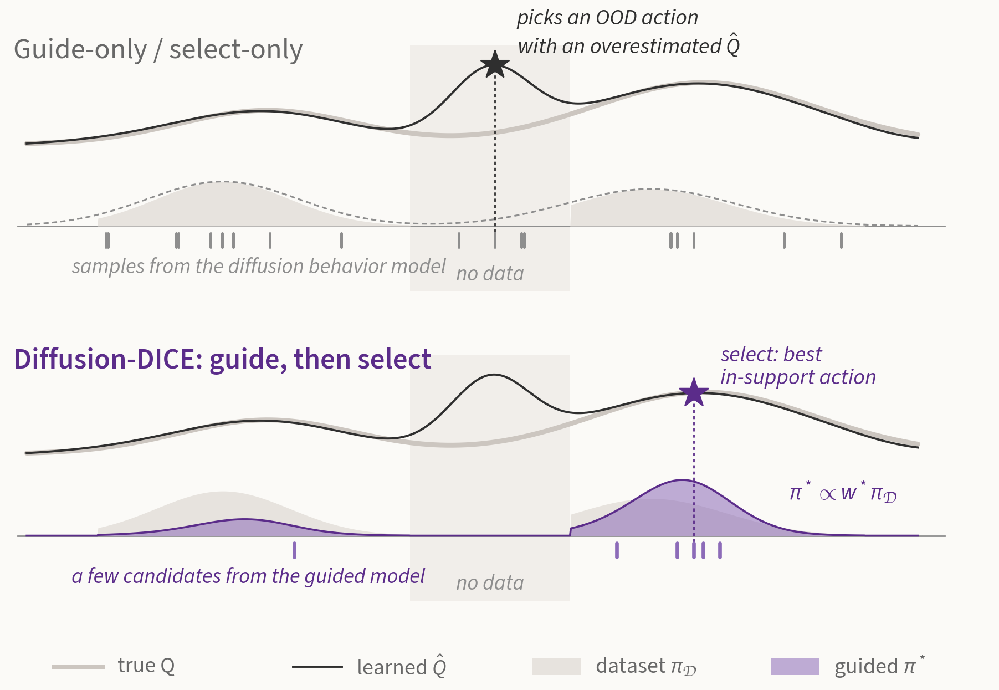
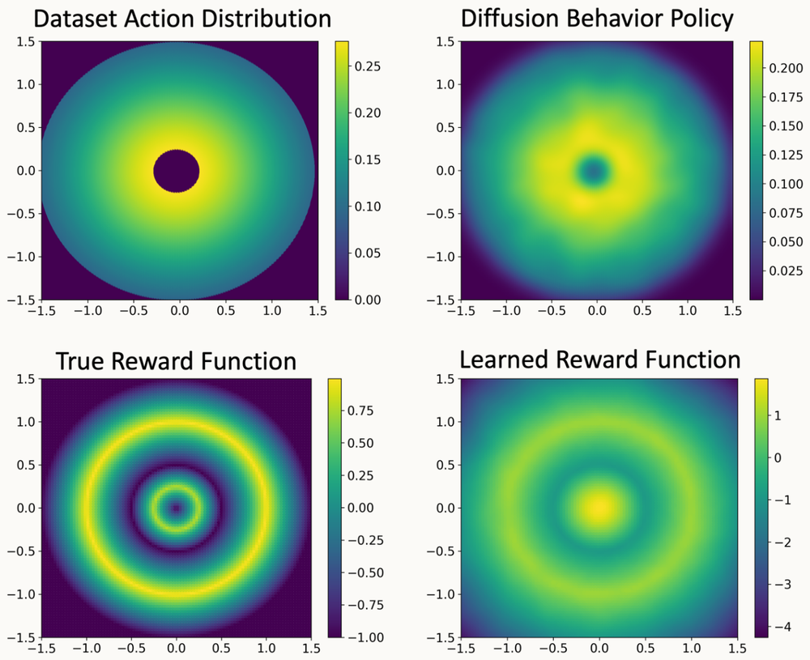
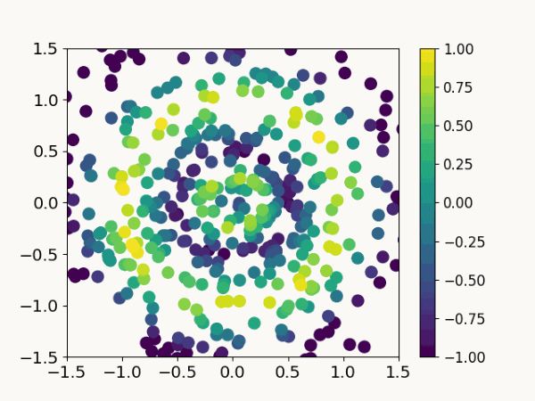
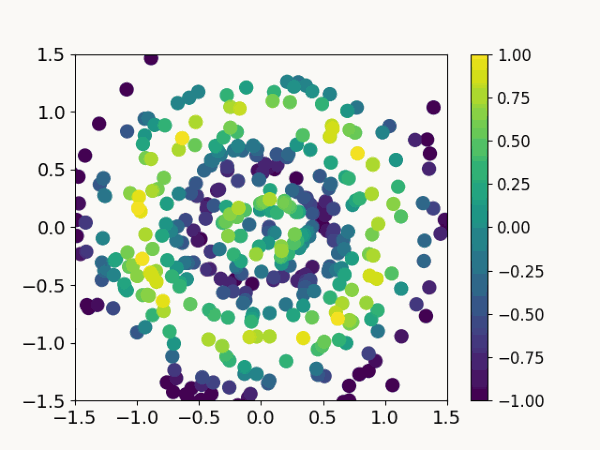
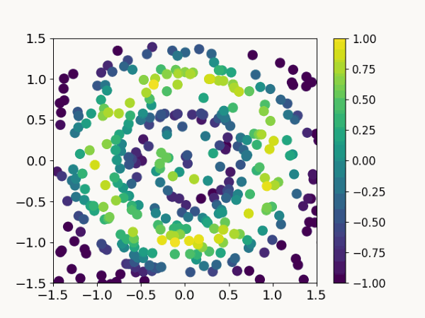
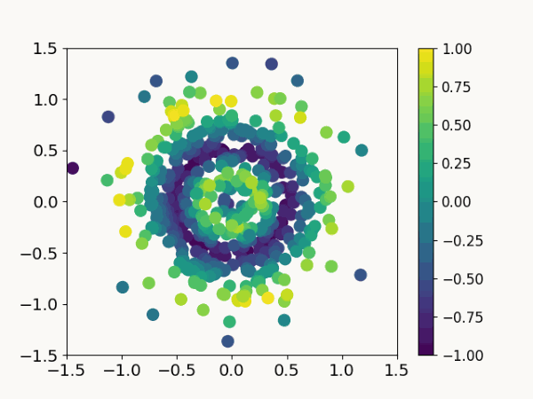
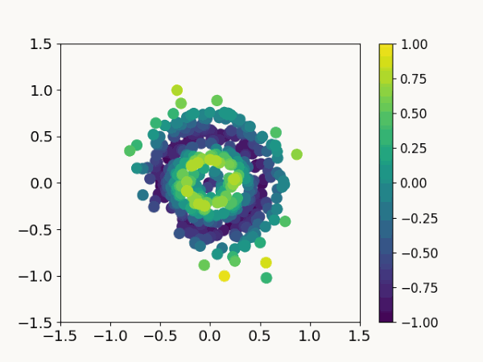
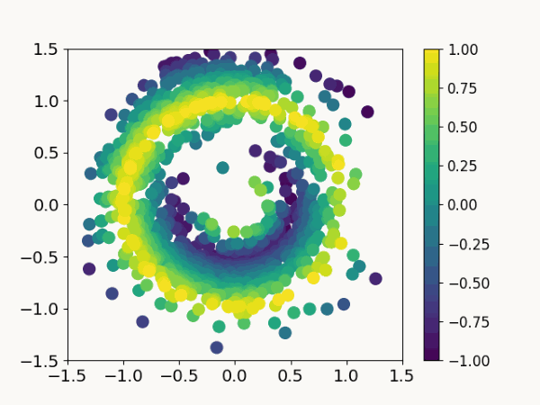

1Shanghai Jiao Tong University 2UT Austin 3Tsinghua University
NeurIPS 2024/* equal contribution
DICE learns the ratio between the optimal and the dataset distributions. Diffusion-DICE reads this ratio as a transformation of the behavior policy: the optimal policy's score is the behavior score plus a guidance term that we learn in-sample. It guides a diffusion behavior model toward high-value in-support actions, then selects the best of a few candidates.

Diffusion models fit multi-modal behavior well, which makes them attractive for offline RL. Existing methods turn them into policies in one of two ways:
Both query the critic on generated actions. A diffusion model can still produce out-of-distribution actions, especially with frequent sampling, and the critic tends to overestimate exactly those, so the guidance or the selection is drawn toward them.
The fix is to use the critic only on dataset actions during guidance, and only on a few well-guided candidates during selection.
DICE methods solve an \(f\)-divergence-regularized LP form of RL through its dual, which uses only \((s,a,s')\) samples from the dataset:
$$\min_V\ \mathbb{E}_{(s,a)\sim d^{\mathcal D}}\Big[(1-\gamma)V(s) + \alpha f^*\big([Q(s,a)-V(s)]/\alpha\big)\Big],$$ $$\min_Q\ \mathbb{E}_{(s,a,s')\sim d^{\mathcal D}}\Big[\big(r(s,a)+\gamma V(s')-Q(s,a)\big)^2\Big].$$The solution gives the optimal stationary distribution ratio, \(w^*(s,a) = d^*(s,a)/d^{\mathcal D}(s,a) = \max\big\{0,(f')^{-1}\big(Q^*(s,a)-V^*(s)\big)\big\}\). Since a policy is its stationary distribution normalized over actions, the same ratio transforms the behavior policy into the optimal one:
$$\pi^*(a|s) \;\propto\; w^*(s,a)\;\pi^{\mathcal D}(a|s).$$For a diffusion model, all we need is the score of \(\pi^*\) along the reverse process, and it splits into two terms:
$$\nabla_{a_t}\log\pi^*_t(a_t|s) \;=\; \underbrace{\nabla_{a_t}\log\pi^{\mathcal D}_t(a_t|s)}_{\text{diffusion behavior model}} \;+\; \underbrace{{\color{#5B2C8A}\nabla_{a_t}\log\mathbb{E}_{a_0\sim\pi^{\mathcal D}(a_0|a_t,s)}\big[w^*(s,a_0)\big]}}_{\text{guidance}} .$$Previous DICE methods extract a unimodal Gaussian policy from \(w^*\); here the diffusion model keeps every mode of \(\pi^*\).
The guidance term is a log of a conditional expectation, which is intractable directly. For any non-negative \(f\), however, \(\min_y \mathbb{E}_x\big[f(x)e^{-y} + y\big]\) is convex and minimized by \(y^*=\log\mathbb{E}_x[f(x)]\). Applying this along the forward diffusion process gives the In-sample Guidance Learning (IGL) objective for a guidance network \(g_\theta\):
$$\min_\theta\ \mathbb{E}_{t\sim\mathcal U(0,T)}\,\mathbb{E}_{{\color{#5B2C8A}a\sim\pi^{\mathcal D}(a|s)}}\,\mathbb{E}_{a_t\sim p(a_t|a_0)}\Big[w^*(s,a)\,e^{-g_\theta(s,a_t,t)} + g_\theta(s,a_t,t)\Big],$$whose optimum satisfies \(\nabla_{a_t} g_{\theta^*}(s,a_t,t) = \nabla_{a_t}\log\mathbb{E}_{\pi^{\mathcal D}(a_0|a_t,s)}\big[w^*(s,a_0)\big]\).
The log in the guidance is undefined where \(w^*=0\), so \((f')^{-1}\) must stay positive, while \(f^*\) should stay numerically tame. Reverse KL satisfies the first condition and Pearson \(\chi^2\) the second; we join them:
$$f(x) = \begin{cases}(x-1)^2 & x\ge 1\\ x\log x - x + 1 & 0\le x<1\end{cases}\quad\Longrightarrow\quad (f')^{-1}(x) = \begin{cases}x/2+1 & x\ge 0\\ e^{x} & x<0\end{cases},\qquad f^*(x) = \begin{cases}x^2/4+x & x\ge 0\\ e^{x}-1 & x<0\end{cases}.$$The ratio is now strictly positive everywhere, and \(f^*\) is at most quadratic.
The behavior constraint makes \(\pi^*\) multi-modal, so following its score can still land in a local mode. We sample a few candidates from the guided model and keep the one with the highest DICE critic value:
$$\pi(s) = \arg\max_{a\,\in\,\{a^1_0,\dots,a^K_0\}\,\sim\,\pi^*(\cdot|s)}\ Q^*(s,a).$$Because the candidates already come from in-support, high-value regions, a small \(K\) is enough, and few critic queries leave little room to exploit its errors. On AntMaze, Diffusion-DICE uses 1 to 8 candidates where IDQL uses 32.
Dataset actions follow a standard normal distribution restricted to an annulus; the true reward peaks on the outer ring. The diffusion behavior model and the learned reward both fit the data well but make errors where there is no data, and the learned reward is too high in the empty center.







Generated actions colored by true reward. QGPO has no select step.
QGPO's guidance is learned from the critic on generated actions, so it drifts toward the overestimated center; selecting afterwards cannot fix a wrong guide step. IDQL needs many candidates to cover the optimum and picks from out-of-distribution ones as well. Only Diffusion-DICE places its actions on the outer ring.
Normalized scores at the end of training, 5 seeds. CQL, IQL and standard deviations are in the paper; D-DICE is Diffusion-DICE.
| SQL | O-DICE | Diffusion-QL | SfBC | QGPO | IDQL | D-DICE | |
|---|---|---|---|---|---|---|---|
| halfcheetah-m | 48.3 | 47.4 | 51.1 | 45.9 | 54.1 | 51.0 | 60.0 |
| hopper-m | 75.5 | 86.1 | 90.5 | 57.1 | 98.0 | 65.4 | 100.2 |
| walker2d-m | 84.2 | 84.9 | 87.0 | 77.9 | 86.0 | 82.5 | 89.3 |
| halfcheetah-m-r | 44.8 | 44.0 | 47.8 | 37.1 | 47.6 | 45.9 | 49.2 |
| hopper-m-r | 99.7 | 99.9 | 101.3 | 86.2 | 96.9 | 92.1 | 102.3 |
| walker2d-m-r | 81.2 | 83.6 | 95.5 | 65.1 | 84.4 | 85.1 | 90.8 |
| halfcheetah-m-e | 94.0 | 93.2 | 96.8 | 92.6 | 93.5 | 95.9 | 97.3 |
| hopper-m-e | 111.8 | 110.8 | 111.1 | 108.6 | 108.0 | 108.6 | 112.2 |
| walker2d-m-e | 110.0 | 110.8 | 110.1 | 109.8 | 110.7 | 112.7 | 114.1 |
| antmaze-u | 92.2 | 94.1 | 93.4 | 92.0 | 96.4 | 94.0 | 98.1 |
| antmaze-u-d | 74.0 | 79.5 | 66.2 | 85.3 | 74.4 | 80.2 | 82.0 |
| antmaze-m-p | 80.2 | 86.0 | 76.6 | 81.3 | 83.6 | 84.5 | 91.3 |
| antmaze-m-d | 79.1 | 82.7 | 78.6 | 82.0 | 83.8 | 84.8 | 85.7 |
| antmaze-l-p | 53.2 | 55.9 | 46.4 | 59.3 | 66.6 | 63.5 | 68.6 |
| antmaze-l-d | 52.3 | 54.0 | 56.6 | 45.5 | 64.8 | 67.9 | 72.0 |
| kitchen-p | – | – | 60.5 | – | – | – | 78.3 |
| kitchen-m | – | – | 62.6 | – | – | – | 67.8 |
| pen-human | – | – | 72.8 | – | 73.9 | – | 84.4 |
| pen-cloned | – | – | 57.3 | – | 54.2 | – | 83.8 |
| mean (first 15) | 79 | 81 | 81 | 75 | 83 | 81 | 88 |
Diffusion-DICE reaches a mean of 88 on MuJoCo and AntMaze against 83 for QGPO, the strongest diffusion baseline, and is best on all four Kitchen and Adroit tasks, e.g. pen-cloned (57.3 → 83.8). The gap to O-DICE (81), a strong DICE method that extracts a Gaussian policy, reflects how multi-modal DICE's optimal policy is.
Guiding also lowers overestimation in practice. With the same critic and behavior model, guide-then-select reaches higher returns than selecting from behavior samples, while its selected actions have lower predicted Q-values.
@inproceedings{mao2024diffusiondice,
title = {Diffusion-DICE: In-Sample Diffusion Guidance for Offline
Reinforcement Learning},
author = {Mao, Liyuan and Xu, Haoran and Zhan, Xianyuan and Zhang, Weinan and
Zhang, Amy},
booktitle = {Advances in Neural Information Processing Systems},
year = {2024}
}
D4RL: Fu et al., 2020 · O-DICE: Mao et al., ICLR 2024 · SQL: Xu et al., ICLR 2023 · QGPO: Lu et al., ICML 2023 · IDQL: Hansen-Estruch et al., 2023 · SfBC: Chen et al., ICLR 2023 · Diffusion-QL: Wang et al., ICLR 2023 · DICE: Nachum & Dai, 2020